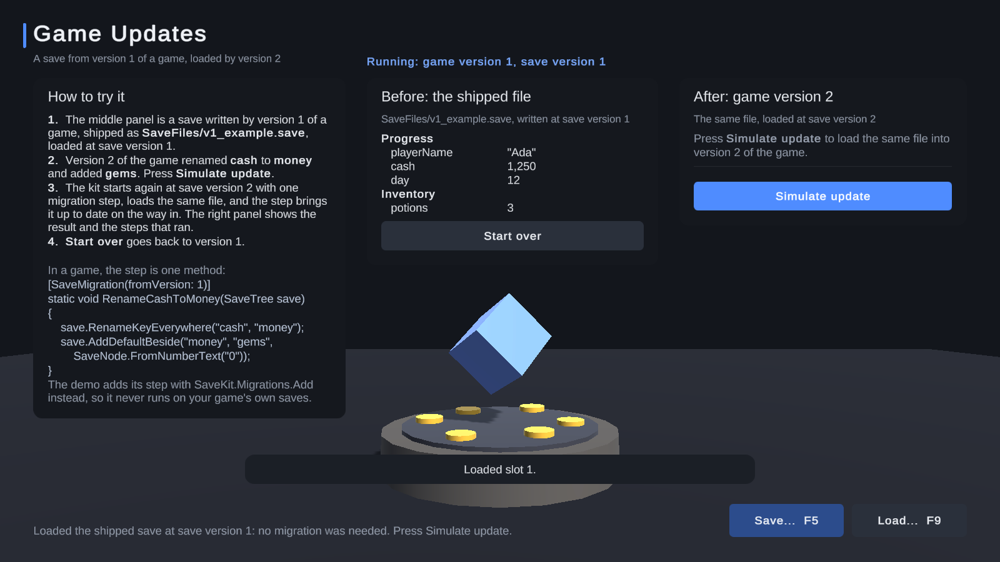
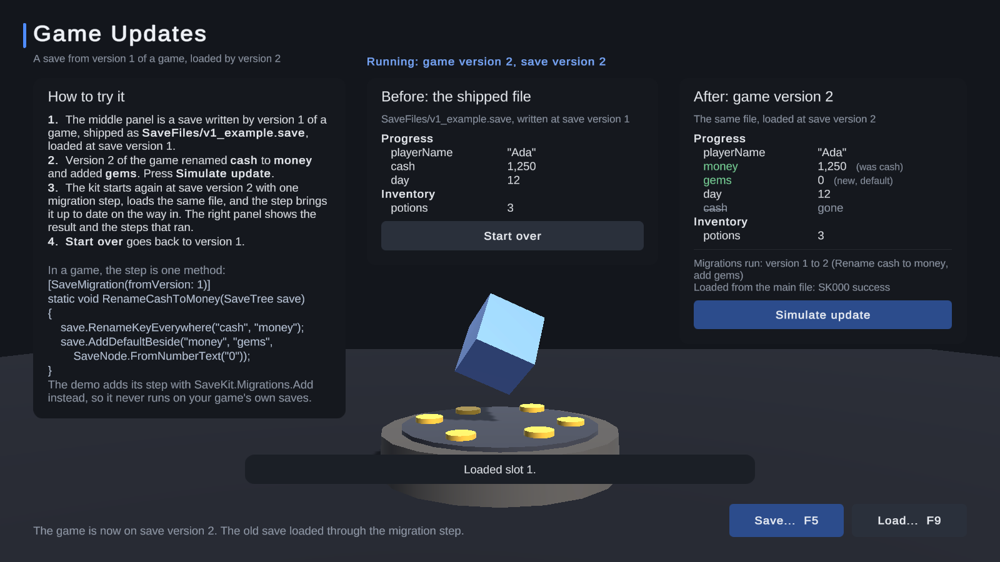

Walkthrough: game updates and migrations
You shipped your game, players have saves, and now an update renames a value. This page shows how old saves keep loading. The Game Updates demo (Samples/Demos/Scenes/GameUpdatesDemo) plays it through; the Game Updates guide has every rule.
The situation #
Version 1 of a game saved the player's money as cash. Version 2 calls it money and adds gems. A version 1 save still says cash:

Without help, version 2 would read money from that save, not find it, and start the player at 0.
Do you need a migration at all? #
Most changes need none. Adding a value, adding an object, deleting an object, reordering enum values, renaming a scene, or switching compression or encryption on all just work: old saves load and new values keep their defaults.
You need one when an update renames something saved (a value, a ticked field, a category, a script that saves itself), changes what a value means (0 to 100 becomes 0 to 1), or moves a value to another category.
1. Raise the save version #
Select the settings asset, open the Advanced tab, Game updates, and raise Save version by one: from 1 to 2. Every save records the version it was written with.
2. Write one step #
A migration step is a static method that upgrades a save from one version to the next:
using AllInOneSaveKit;
public static class SaveMigrations
{
[SaveMigration(fromVersion: 1)]
static void RenameCashToMoney(SaveTree save)
{
save.RenameKeyEverywhere("cash", "money");
save.AddDefaultBeside("money", "gems", SaveNode.FromNumberText("0"));
}
}
The kit finds it by itself (Find migration steps by itself is on by default). When a version 1 save loads, the step runs first, then the save loads as if version 2 had written it:

3. Keep every step #
Each update that needs one adds one step: fromVersion: 2, then fromVersion: 3, and so on. A save from version 1 passes through every step on its way to the current version, so never delete an old step and never lower Save version after a release.
A save written by a newer version of your game is refused with NewerVersion (SK120) and left untouched, so a player who goes back to an older build does not lose it.
4. Test with real old saves #
Keep a few save files from each version you released, and load them in the new build before you ship it. The Save Inspector opens any save file as a tree and shows its save version in the list; Import... copies a file into the save folder to try it.
Things that help #
- Enums are saved by name, so reordering them is safe; renaming one needs a step.
- If you also use IL2CPP with high code stripping, the kit keeps your migration methods from being stripped by itself.
GameUpdates.mdlists every helper onSaveTree, such as renaming keys, moving values between categories and changing a value's units.
Next: Backups and recovery.